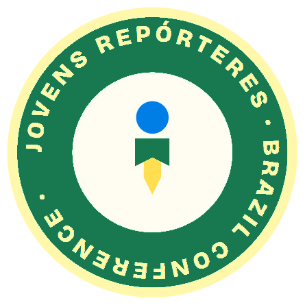
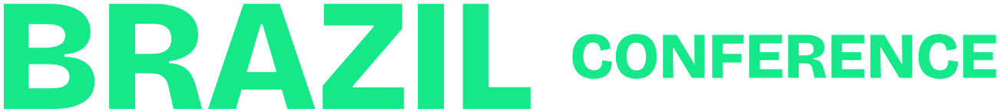

Proposta para parceiros · 2027Missão: formar, conectar e amplificar a voz de jovens comunicadores da rede pública.

Quem apresenta
VP de Social Media & Growth
Brazil Conference at Harvard & MIT
A Brazil Conference
2015
Organizada por estudantes brasileiros em Boston. Lideranças, pesquisadores e jovens pensando o Brasil juntos.
O Brasil em primeira pessoaA força da nossa identidade para impulsionar o país.
Brazil Conference

Quem somos
A maior conferência sobre o Brasil organizada por estudantes, pesquisadores e professores brasileiros nos EUA. Desde 2015, uma equipe voluntária reúne lideranças em Harvard e MIT.
Ideias viram planos e pessoas se conectam para transformar o Brasil.
Quem fez história e quem escreve a próxima, lado a lado.
Pessoas reconhecidas pelo talento e pelo impacto.
Em números
Fonte: brazilconference.org e imprensa, edição 2026.
No palco
Impacto social
Talentos de todas as regiões com viagem, mentoria e palco em Harvard e MIT.
Líderes do terceiro setor ampliam seu impacto.
embaixadores@brazilconference.orgEquipes criam IA para desafios sociais.
ai4good@brazilconference.orgArtistas que transformam pela arte.
culturaemacao@brazilconference.orgStartups com soluções para o país.
hackbrazil@brazilconference.orgCiência que pode transformar o Brasil.
pesquisadores@brazilconference.orgServidores públicos que fazem a diferença.
servindoobrasil@brazilconference.orgAlunos de escola pública propõem soluções.
dialogos@brazilconference.orgA proposta nova, apresentada a seguir.
Em construçãoAcompanhe
O programa
Jornalismo, criação de conteúdo e comunicação digital, com profissionais da área.
Com parceiros, mentores, palestrantes e a rede da Brazil Conference.
Da conferência, contando o Brasil em primeira pessoa, a partir de cada região.
Inspirado no time de jovens comunicadores do G20 no Brasil.
De onde vem a ideia
O time de jovens comunicadores na cobertura do G20 no Brasil.
Identidade
Em construção
Proposta de edital
O recorte final ainda está em definição. O foco desta proposta:
A jornada
Edital nas escolas, redes e parceiros.
Jovens selecionados por região.
Dois encontros por mês, on-line.
Cobertura em Harvard e MIT, com a comunidade.
Conteúdo e devolutiva na comunidade.
A formação
Nicho, público, plataforma e voz própria.
Pauta, fontes, entrevista e cuidado com quem é retratado.
Gancho, presença em vídeo e captação com celular.
Vídeo vertical, legendas e IA usada com responsabilidade.
Portfólio, métricas, renda e saúde mental.
Trabalho em equipe, prazo curto e publicação no dia.
O que cada jovem recebe
Seis módulos com profissionais da comunicação.
Um mentor da área de interesse de cada jovem.
Itens previstos, com composição a confirmar.
Acesso à conferência como parte da equipe.
Presencial em Boston ou remota, conforme os apoios.
E portfólio publicado para as próximas oportunidades.
O que estamos buscando
Levar os jovens até Harvard e MIT, e de volta ao Brasil.
O equipamento que fica com eles. Itens a confirmar.
Conteúdo sobre a comunidade, com mentoria dos parceiros.
Patrocínio 01 · Viagem
Para cobrir a conferência de dentro, junto com a comunidade, e voltar ao Brasil com a história contada por eles.
Patrocínio 02 · Kit
Para gravar, editar e publicar.
Tripé e estabilizador.
Para a produção de conteúdo.
Luz para gravar em qualquer lugar.
Para publicar da rua.
Para levar o equipamento.
A identidade do programa.
O selo do jovem repórter.
Patrocínio 03 · Impacto social
Cada jovem escolhe uma questão da própria comunidade.
Alguém da rede da Brazil Conference que atua no tema.
Reportagens publicadas nas redes do jovem e da BC.
Oficina na escola ou na comunidade de origem.
O Jovem Repórter do Meio Ambiente (participante a definir) pode ser mentorado por pessoas da rede da Brazil Conference que atuam no tema: palestrantes, patrocinadores ou organizadores. Mentores a confirmar.
Como apoiar
Viagem, kit ou plano de impacto. Uma frente ou o programa inteiro.
Acompanhar um jovem na causa em que sua instituição atua.
Ajudar a desenhar o edital, a seleção e o plano de impacto.
Secretarias de educação, escolas, redações, museus e ONGs.
Levar a chamada até os jovens que mais precisam dela.
Experimente
Aplicação ilustrativa: um exemplo de como a marca pode aparecer.
Clique na credencial para trocar a região
Além da BC
Além da Brazil Conference, trabalha na interseção entre comunicação, educação e tecnologia imersiva.
Realidade virtual, realidade aumentada e vídeo 360° a serviço do aprendizado.
Plataforma com jogos que aproxima estudantes das olimpíadas do conhecimento.
Experiências imersivas sob medida para exposições e salas de aula.
Vamos conversar
Harvard & MIT
Jovens Repórteres BC 2027